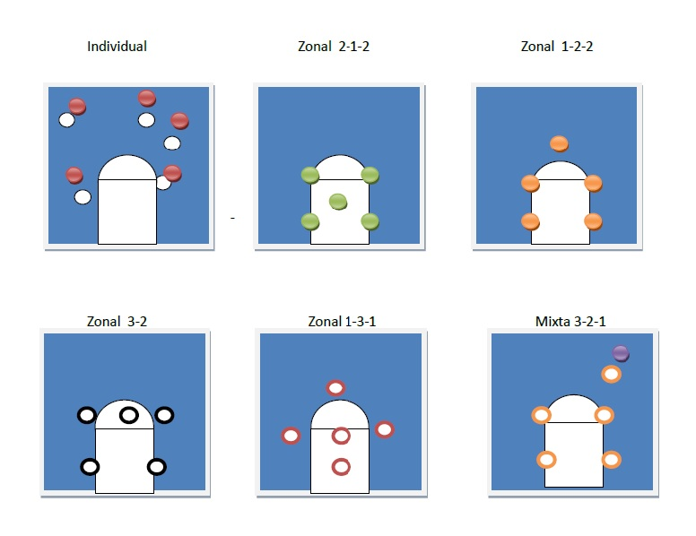
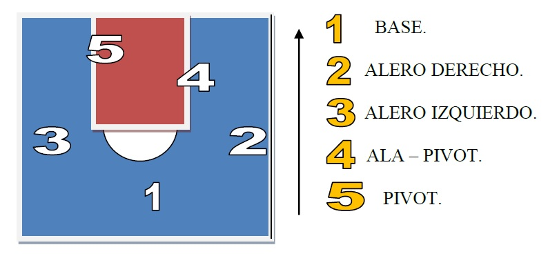

Táctica defensiva.
¿Cómo se puede marcar o cuáles son las formas básicas de marcar que adopta un equipo?
3 formas básicas
1) Individual (1 vs. 1). 2) Zona (2-1-2; 2-3; 3-2; 1-3-1; 1-2-2) 3) Mixtas (1-4 o cajón 1; 2-3, etc.)

¿De qué depende la táctica o forma de marcar o defender de un equipo?
Múltiples son las razones, como por ejemplo las características de los jugadores de mi equipo, las características del equipo contrario, las estrategias a utilizar por parte del entrenador de acuerdo a las circunstancias del juego: si vamos en ventaja o desventaja, tiempo de juego transcurrido, etc.
Táctica ofensiva o de ataque.
Se refiere a la formación y disposición de los jugadores en el ataque.
Diagrama, ubicación básica de los jugadores en el campo.

Base o Armador: de muy buen manejo de pelota, pase y técnica en general.
Ayuda Base o Escolta: juega a un lado del Base, aportando manejo y tiro.
Alero: juega en ataque a los lados, de buen manejo técnico y lanzamiento.
Ala Pívot: juega cerca de la llave, a los lados, siendo uno de los más altos del equipo.
Pívot: en general, el más alto del equipo; se mueve básicamente dentro de la llave o área,
generalmente de espaldas al aro del equipo rival.
Ejemplo básico de la ubicación de los jugadores según su puesto; en este caso, no se encuentra el Ayude Base, siendo el 2 y 3 aleros. Vemos entonces que el 1, 2 y 3 son Jugadores del perímetro; 4 y 5, Jugadores internos.